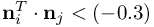

Simulate with complex geometries and complex physics
%ind_OrganizePC(3)%
state of filling MESHFREE points at boundaries
Y%ind_OrganizePC(3)% == -2 : hole search not executed for this time step
Y%ind_OrganizePC(3)% == 0 : no action of surface/boundary filling taken for this point
Y%ind_OrganizePC(3)% == 1 : scheduled for hole search in its neighborhood
Y%ind_OrganizePC(3)% == 1.1 : point not allowed to fill because of then BOUNDARYFILLING-flag or an appropriate definition of ORGANIZE_ReducedFillingOfWalls
Y%ind_OrganizePC(3)% == 1.4 : point prepared successfully for local hole search
Y%ind_OrganizePC(3)% == 2 : actually created new point in its neighborhood
Y%ind_OrganizePC(3)% == 3 : point was just created by an already existing point in the neighborhood
Y%ind_OrganizePC(3)% == 8 : creation of boundary point motivated by thin layers
Special values for filling of free surfaces :
Y%ind_OrganizePC(3)% == 0.0 : no hole search scheduled for this point
Y%ind_OrganizePC(3)% == 0.1 : hole search scheduled but did not find enough neighbors for surface triangulation
Y%ind_OrganizePC(3)% == 0.2 : found enough neighbors, but no interior/wall points found in the neighbor stencil -> surface triangulatin oskipped
Y%ind_OrganizePC(3)% == 0.3 : surface triangulation was performed, did not find candidates for hole filling (all triangles small enough)
Y%ind_OrganizePC(3)% == 0.4 : same as 0.3; some candidates were rejected because triangle consisted of only on free surface point
Y%ind_OrganizePC(3)% == 0.5 : same as 0.3; some candidates were rejected because center of circumcircle was not insice the triangle itself
Y%ind_OrganizePC(3)% == 0.6 : same as 0.3; some candidates were rejected due to the angle criterium  (any two normals at the triangle corners
Y%ind_OrganizePC(3)% == 0.7 : surface triangulatin was performed, found some candidates
Y%ind_OrganizePC(3)% == 2 : actually created a new free surface point in its neighborhood
Y%ind_OrganizePC(3)% == 3 : point was just created by an already existing neighbor point
Y%ind_OrganizePC(3)% == 4 : point was created AND scheduled for the "BringToSurface" algorithm
Y%ind_OrganizePC(3)% == 5 : point was created, and the "BringToSurfcae"-algorithm was effected
Y%ind_OrganizePC(3)% == 6 : point was previously interior and changed to %BND_free%, it is automaticlly scheduled for the bring-to-surface-treatment
Y%ind_OrganizePC(3)% == 7 : point was previously interior and changed to %BND_free%, additionally the "BringToSurfcae"-algorithm was effected
Y%ind_OrganizePC(3)% == -11: actually fulfills criterion to become free surface point, but rejected for obvious reasons
Y%ind_OrganizePC(3)% == -22: actually checked for being free surface, but does not fulfill the appropriate criteria